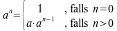
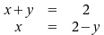
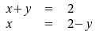
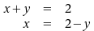

Häufig gestellte Fragen zum Formeleditor MATH
Fragen
- Wie kann ich eine linke Klammer ohne eine schließende rechte Klammer eingeben?
- Wie kann ich mehrere Gleichungen entlang des Gleichheitszeichens ausrichten?
- Wie kann ich Formeln (z.B. in einem längeren Text) nummerieren?
- Wie kann ich Formeln mit Microsoft Office anzeigen lassen?
- Wie kann ich eine Formel als Grafik exportieren?
- Wo erhalte ich weitere Hilfe?
Antworten
1. Wie kann ich eine linke Klammer ohne eine schließende rechte Klammer eingeben?
Benötigt man eine skalierbare linke Klammer, aber keine rechte schließende Klammer,
so kann man dies dadurch erreichen, dass man die nicht benötigte Klammer auf none setzt.
Zum Beispiel würde man für den mathematischen Ausdruck:
im Formeleditor Folgendes schreiben:
a^n = left lbrace binom{1", falls "n = 0}{a cdot a^{n-1}", falls "n > 0} right none
nach oben2. Wie kann ich mehrere Gleichungen entlang des Gleichheitszeichens ausrichten?
Möchte man mehrere Gleichungen so anordnen, dass sich das Gleichheitszeichen jeweils auf gleicher
Höhe befindet, kann man dafür eine Matrix verwenden.
Die Matrix dient dabei nur der Anordnung der Elemente entlang eines gedachten Gitters, sie erzeugt
keine Klammern. Die einzelnen Elemente werden durch # getrennt, eine neue Reihe der Matrix
beginnt man mit ##.
So könnte man z.B. das obige Beispiel wie folgt umschreiben:
a^n = left lbrace matrix { 1 # ", falls "n = 0 ## a cdot a^{n-1} # ", falls "n > 0 } right none
um folgendes Formelbild zu erhalten:

Bei Gleichheitszeichen innerhalb einer Matrix ist zu beachten (insbesondere, wenn diese ein einzelnes
Element einer Matrix darstellen sollen), dass = ein beidseitiger Operator ist und deshalb
an beiden Seiten einen Ausdruck benötigt.
Um also z.B. das folgende Formelbild zu erhalten:

schreiben Sie im Formeleditor Folgendes (beachten sie die {} auf beiden Seiten der Gleichheitszeichen):
matrix { x+y # {}={} # 2 ## x # {}={} # 2-y }
Die Elemente einer Matrix werden per Default mittig ausgerichtet; beginnen sie jedoch mit einem Text, werden sie linksbündig ausgerichtet:
matrix { ""x+y # {}={} # ""2 ## ""x # {}={} # ""2-y }
ergibt:

Um Elemente in einer Matrix links- bzw. rechtsbündig auszurichten, können Sie außerdem alignl bzw. alignr verwenden:
matrix { alignr x+y # {}={} # alignl 2 ## alignr x # {}={} # alignl 2-y }
ergibt:

nach oben3. Wie kann ich Formeln (z.B. in einem längeren Text) nummerieren?
Wenn Sie die Formeln innerhalb eines Textdokuments verwenden, können Sie für deren
fortlaufende Nummerierung einen Nummernkreis benutzen. Der Writer bietet für diesen
Zweck auch schon einen vordefinierten AutoText fn an: Geben Sie fn ein und
betätigen Sie danach die Taste F3. Es wird eine 1-zeilige, 2-spaltige Tabelle
eingefügt, die rechts den Feldbefehl mit der fortlaufenden Formel-Nummer, links (als Platzhalter)
die berühmte Formel zur Äquivalenz von Masse und Energie enthält. Doppelklicken Sie auf
diese Formel, um sie zu bearbeiten bzw. durch Ihre eigene Formel zu ersetzen.
Weiterlesen: Für eine detailliertere Beschreibung empfehlen wir Ihnen das
OpenOffice.org-Wiki.
4. Wie kann ich Formeln mit Microsoft Office anzeigen lassen?
Um mit OpenOffice.org MATH erzeugte und ggf. in ein Textdokument eingebettete
Formeln auch dann noch sinnvoll lesen und bearbeiten zu können, wenn dieses Textdokument
im Format von Microsoft Word abgespeichert und mit diesem Programm geöffnet wurde, sollten
Sie die automatische Konvertierung von und nach MathType einschalten: Setzen Sie dazu unter
Extras -> Optionen -> Laden/Speichern -> Microsoft Office in der Zeile
MathType nach OpenOffice.org Math... die Häkchen in den Spalten [L]
(Laden) und [S] (Speichern).
Hinweis: Bitte beachten Sie, dass MathType und OpenOffice.org MATH einen
unterschiedlichen Funktionsumfang haben. Der Im- und Export fremder Dateiformate unterliegt aus
diesem Grunde immer gewissen Einschränkungen; vergessen Sie deshalb nicht, auch immer eine
Kopie für sich im OpenDocument-Format abzuspeichern.
5. Wie kann ich eine Formel als Grafik exportieren?
Wenn Sie Math als eigenständiges Modul aufgerufen und Ihre Formel(n) dort eingegeben haben,
steht Ihnen neben dem Speichern im OpenDocument-Format nur wie in allen Modulen
ein Export als PDF (DIN-A4-Seite) zur Verfügung.
Um eine oder mehrere Formeln als Grafik-Datei zu erhalten (z.B. für das Einbinden in eine
Webseite), brauchen Sie keine Screenshots des Formeleditor-Fensters zu machen
dies würde nur unnötige Arbeit bedeuten und Sie würden darüber hinaus
nur eine Grafikdatei im Rasterformat erhalten, die sich nicht skalieren (vergrößern)
lässt, ohne dass störende Artefakte (Treppeneffekte) auftreten.
Öffnen Sie statt dessen das Modul DRAW (Datei -> Neu -> Zeichnung) und fügen Sie hier die Formel als Objekt ein (Einfügen -> Objekt -> Formel). Nachdem Sie Ihre Formel eingegeben haben und zu Draw zurückgekehrt sind (das Formeleditor-Fenster schließt sich), können Sie die Formel mit einem einfachen Klick markieren (das Objekt erscheint mit grünen Quadraten versehen). Wählen Sie nun aus dem Menü Datei -> Exportieren und aktivieren Sie die Option Selektion (nicht bei allen Dateiformaten auswählbar). Jetzt können Sie die (exakt zugeschnittene) Formel nicht nur in ein Raster-Grafikformat wie PNG oder TIFF, sondern auch in ein Vektor-Grafikformat wie SVG oder EPS exportieren. Vektorgrafiken lassen sich verlustfrei skalieren und sind deshalb auch für den professionellen Druck geeignet.
nach oben6. Wo erhalte ich weitere Hilfe?
Sollten Sie Ihr Problem mit den Hilfen auf dieser Seite nicht lösen können und benötigen
Sie deshalb persönliche Hilfe, so wenden Sie sich mit Ihrer Frage am einfachsten an die Users-Mailingliste.
Informationen zum An- und Abmelden erhalten Sie unter http://de.openoffice.org/probleme.html.
Möglicherweise finden Sie aber die Lösung Ihres Problems auch in der
Dokumentation,
in den Foren
oder unter www.ooowiki.de.
zurück zur Dokumentations-Hauptseite | zurück zur Übersichtsseite der deutschsprachigen FAQs